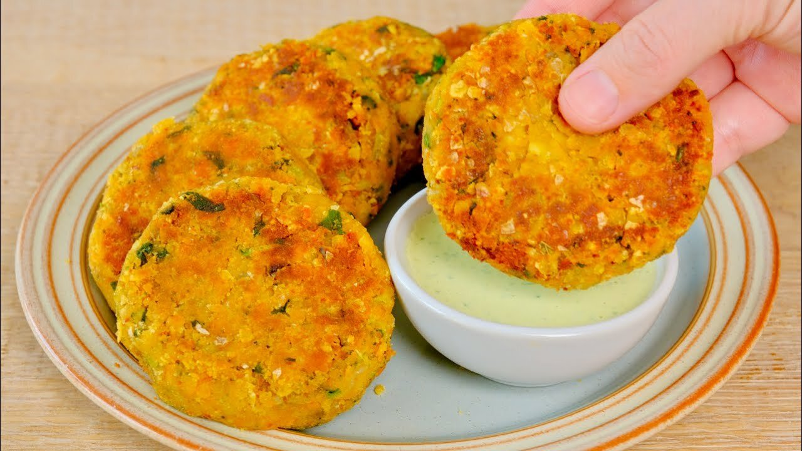

приготовление:
-
285 гр. красной чечевицы замочить в воде на 2 часа. 2 лука-шалот и 2 морковки можно по желанию сначала обжарить - тогда порезать их мелко и после вместе с чечевицей отправить в комбайн, иначе свежими порезать на крупные кусочки и отправить в комбайн вместе с чечевицей. Туда же режем 2 зубчика чеснока (лучше измельчить сразу), пучок петрушки и/или кориандра, 1-2 ст.л томатной пасты, 1 ч.л. соли и 0,5 ч.л. перца.
-
Слепить котлетки, можно по желанию обвалять в панировке. Обжаривать на сковороде в масле примерно минут 5 с каждой стороны.
-
Можно подавать с хумусом или со сметаной.